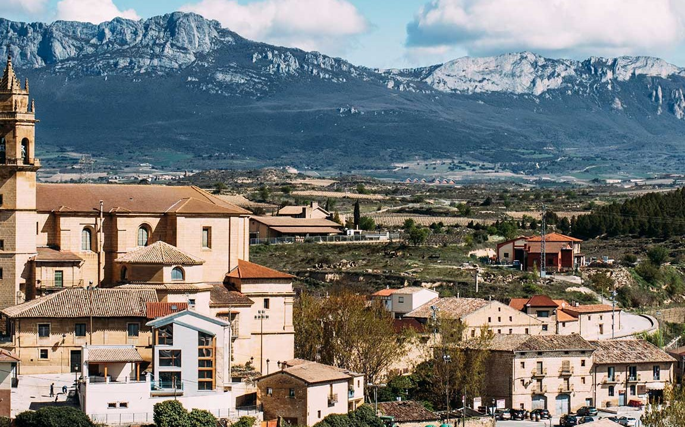
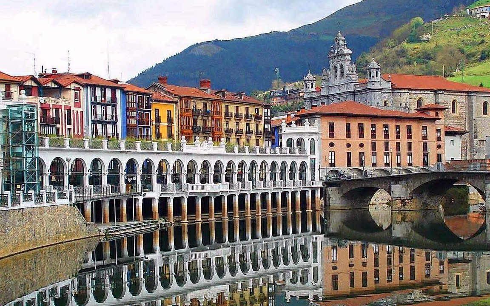
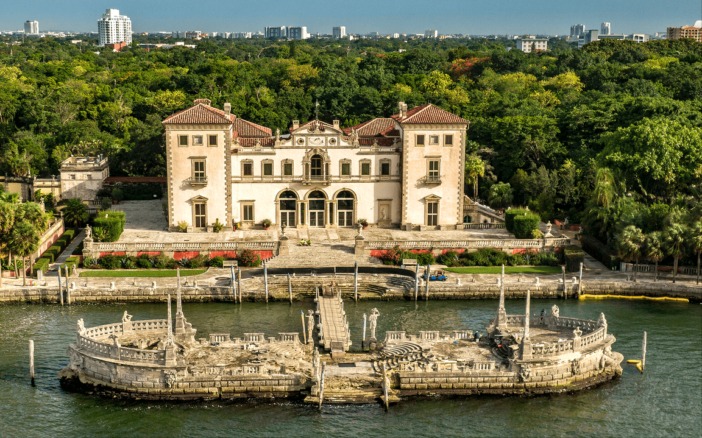
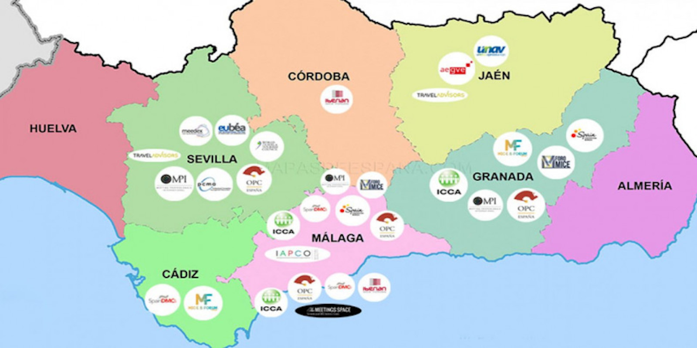
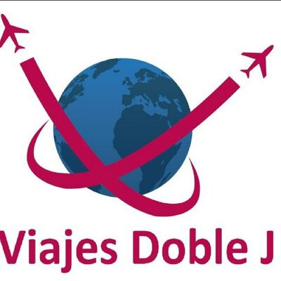
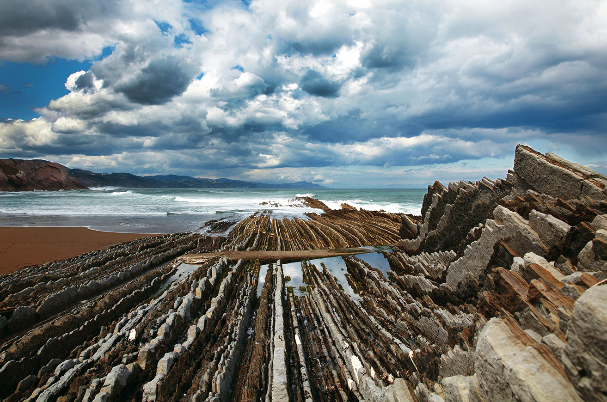

|

Álava
|

Guipúzcoa
|

Vizcaya
|
|---|

|

|

|

|
|---|---|---|---|
Cómo llegar |
Dónde dormir |
Qué comer |
Qué hacer |
El País Vasco está situado al norte de la Península Ibérica. El acceso al País Vasco puede realizarse en avión, en barco, en tren o por carretera. |
Los alojamientos del País Vasco satisfacen al viajero más exigente, desde un ambiente diferente al estilo más clásico. Hay multitud de opciones donde elegir. |
La gastronomía vasca es muy amplia y variada a pesar de su territorio. Disfruta de todo un repertorio de platos y productos cuya excelencia es celebrada en todo el mundo. |
Conoce las posibilidades que brinda esta región del norte de la Península Ibérica vengasen la época del año que vengas. |
|  | |||||
|---|---|---|---|---|---|
|  | |||||

|
El Museo Guggenheim Bilbao (en euskera, Guggenheim Bilbao Museoa; en inglés,
Guggenheim Museum Bilbao) es un museo de arte contemporáneo diseñado por el arquitecto canadiense
Frank O. Gehry y localizado en la villa de Bilbao (País Vasco), España. Es uno de los museos vinculados
en régimen de franquicia o colaboración con la Fundación Solomon R. Guggenheim. Fue inaugurado el 18 de
octubre de 1997 por el rey Juan Carlos I de España.
| ||
|
Los flysch son facies rocosas de origen sedimentario compuestas por alternancia
rítmica de capas de rocas duras cohesivas (calizas, pizarras o areniscas) intercaladas con otras más
blandas friables (margas o lutitas). Esta disposición favorece la erosión diferencial, pues las capas
friables son desgastadas con mayor facilidad que las capas cohesivas. Esto hace que las capas duras se
queden en resalte y sin apoyo, que así son erosionadas más fácilmente, pero a la vez la existencia de las
rocas duras protege a las blandas.
|

| ||

|
La catedral de Santa María, conocida popularmente como Catedral Vieja, es un templo
católico de estilo gótico situado en Vitoria, capital del País Vasco, España. Desde verano de 2015 el templo
está en la lista de monumentos Patrimonio de la Humanidad de la UNESCO bajo la denominación Caminos de Santiago:
Camino francés y caminos del Norte de España.
| ||